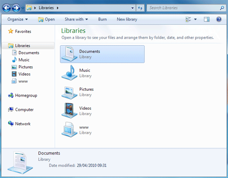

Free
computer Tutorials
|
Free
computer Tutorials
|
|
 back back |
Stay at Home and Learn | ||||
Hard Drive BasicsThe Hard Drive on your computer is where all your files are stored. Not only that, it's the place where the Operating System itself is installed. A hard drive is a physical thing inside of your computer. If you were to take it apart, you'd see one of more disks (called platters), one on top of the other. In a modern hard drive, however, there's usually just one platter. The disks are magnetised and can be written to and read from. The writing and reading is done by an arm which moves across as the disk is spun round. If you were buying a new hard drive, you'd see a figure like 7,200 rpm (revolutions per minute) or 10, 000 rpm. This refers to the speed at which the disks spin. The higher the spin speed the faster the hard disk will be.
Not all hard drives use the spinning disk and arm approach, however. A modern laptop or Netbook may use something called a Solid State Drive (SSD). These have no moving parts, and are considered faster than a hard drive. However, the space available on a SSD is a lot less than on a hard disk, but this could change over the next few years or so. At the moment, SSDs are lot more expensive than hard drives. But again, this could change. Whichever drive you have, hard or Solid State, just bear
in mind that a drive is a physical thing that you use to store files,
install programmes and Operating Systems. But those numbers are fairly meaningless in modern-day computing. Think of how big a picture is that you take on a camera phone. A medium sized image will be about 250 kilobytes. So you could get four if the memory held only a megabyte and about 4 000 if you had a Gigabyte of memory on your phone. You can check to see how big the hard drive is on your
own computer. To do that, start up Windows Explorer by clicking its
icon just to the right of the Start button: When Windows Explorer starts, you'll see this screen:  The default location is inside of the Libraries folder. Click the Computer section instead: You'll then see this: This area should display a graphic of how much space you have left on your hard drive, and how big it is. In the image above, this computer has a hard drive size of 465 Gigabytes (GB), and there is still a roomy 410 Gigabytes of space free to use. The image also shows other drives attached to the computer, a DVD writer in this case. If you have a USB memory stick, it should show up here when it is inserted. Note also that the drive has the name Local Drive (C:), or just the C Drive for short. This C Drive is also known as the root drive, as everything is stored on it. Think of it as the master folder that holds all other folders and files inside of it. Now click on the C drive to highlight it. You should see
some extra option become available at the top: The one we're interested in is the Properties option. Click on this and you'll see a dialogue box appear. This one: Again, we see a graphic of how big the hard drive is, and how much space is free. The graphic this time is a pie chart. One thing to note here is that the size of the hard drive
is 465 Gigabytes, even though it was marketed as having a 500 gigabyte
hard drive. So why the discrepancy? It's because the manufactures uses
a small "g" for gigabytes, and they use 1 gigabyte to mean
a billion bytes. However, a true Gigabytes has a capital "G"
and means 1 073, 741, 824 bytes. So a 500 Gigabyte hard drive actually
has 35 GB missing!
Hard Disk CleanupIf your hard drive is showing a lot of used space, and
not much free space, then click the button "Disk Cleanup"
to see if you can rescue some space. You should then see a small dialogue
box like this one: When Windows has finished its calculation, you'll then see this: Disk Cleanup is telling us that it has found 90.0 Megabytes of files that it can safely delete. These are the ones with check marks. You can check any of the other boxes, as well. For example, the image above shows that the Recycle Bin has 1.97 GB of files in it. If you're sure you haven't accidentally sent an important file to the Recycle Bin then you can safely delete these files as well. In which case, give it a check mark by clicking inside of its box. The same applies to all the others on the list (scroll down to see more). Click on an item to see a description of just what each item on the list does. You can also click the button at the bottom "Clean up system files". All this does is to add even more areas to the list. But you need to delete the system files with care. If you're not sure about an area, leave it unchecked. When you're happy with your selections, click the OK button
to free up disk space. Windows will then go to work erasing the files
and documents you have selected. When it's done, it will return to the
Disk Cleanup screen: In the image above, we're freed up 2 Gigabytes of space. Another area worth exploring in the image above is Tools.
Click this tab at the top to see the following screen: You only need to click the Error-checking option if you've been having a few problems with your computer. Otherwise, you can leave it alone. The Defragmentation option is really a matter of choice. If you have a big hard drive with lots of space, there's little point in defragmenting. It's supposed to speed up file access times, but is really only relevant on older hard drives that don't have much free space. The Backup option is worth exploring. When you click the button, Windows will search your computer for other drives, like DVD writers. If it finds one, it will ask you to use that to backup your files. More expensive versions of Windows 7 will have better options for back up, like a network drive. You should always back up your important files and documents, but cheaper versions of Windows 7 are not that much help - you could easily copy your files to a DVD yourself, without Window's help!
Click OK on the dialogue boxes to get rid of them. You'll
meet Windows Explorer again in the next section, when we explore the
important subject of file extensions.
File Extensions and Windows 7 --> |
|||||
|